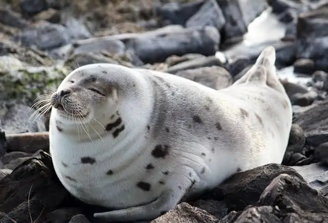
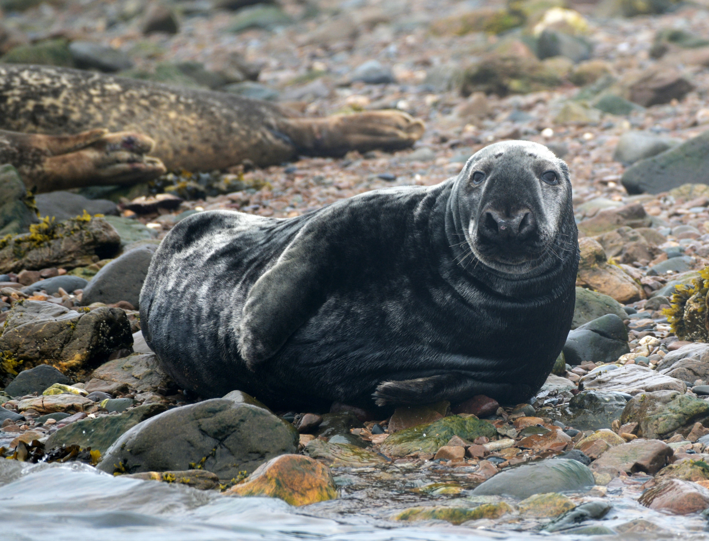
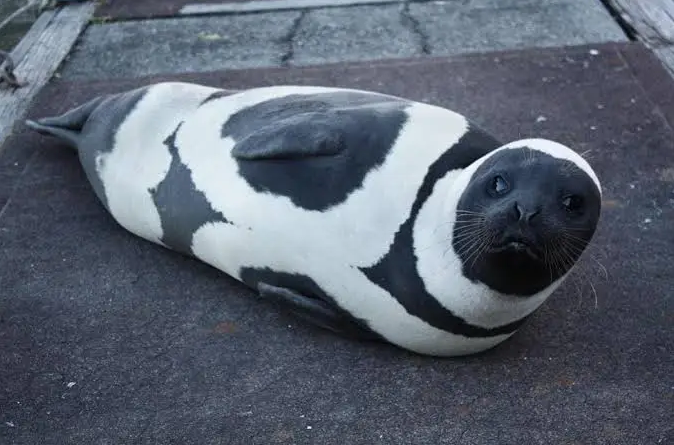
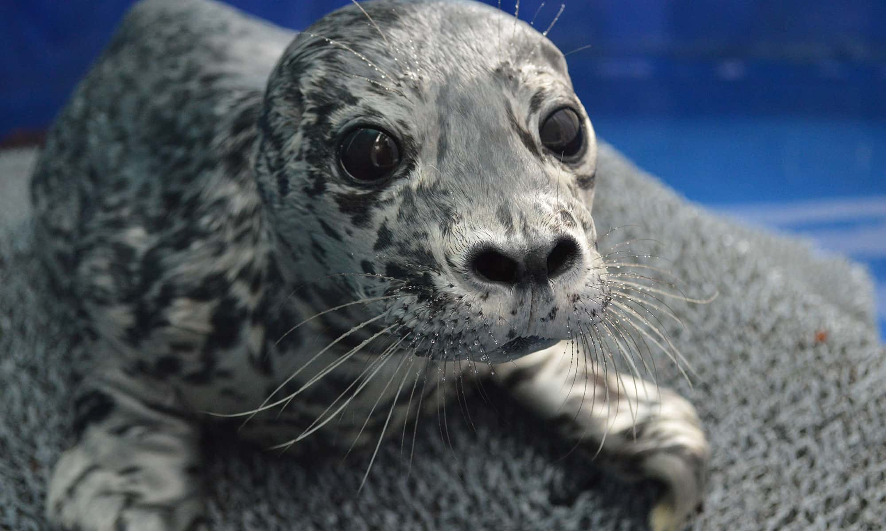

There are 34 different species of seals, but only 18 of them are "true" seals. True seals lack ears. Some seals that would be considered "eared" seals instead of true seals are sea lions and fur seals. These are my 5 favorite types of seals.
My Favorite Types of Seals


